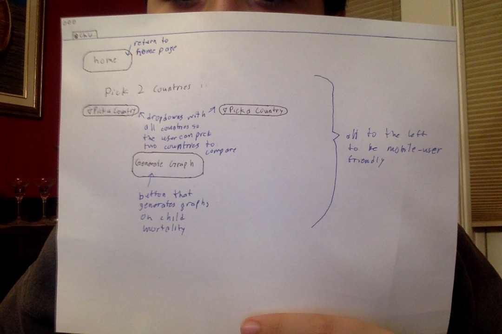
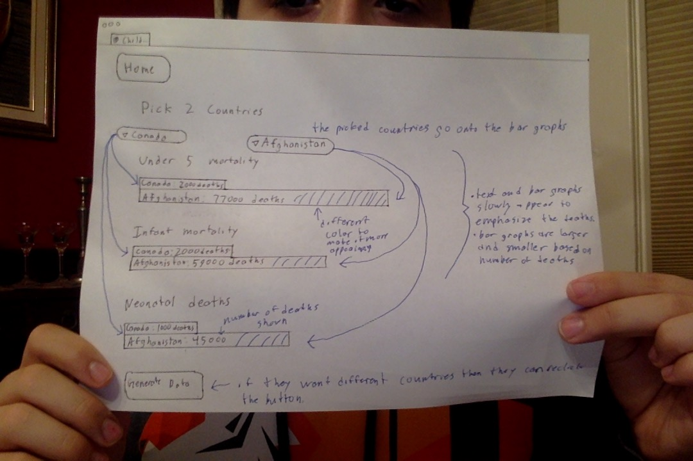
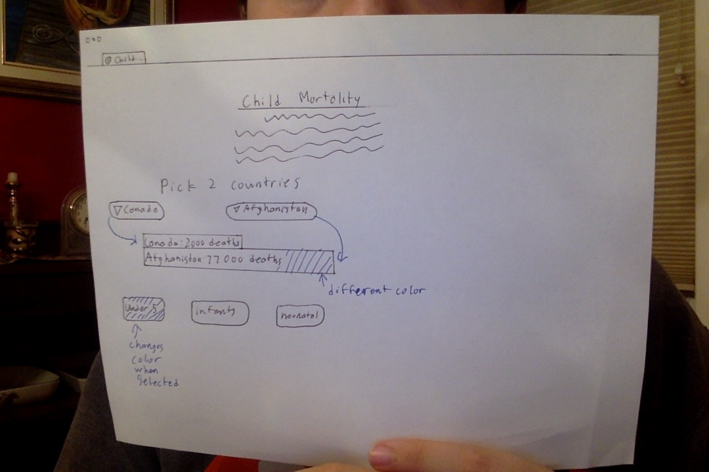

First page. Contains a paragraph on child mortality to give information about the topic and a picture of a sad child to bring emotion to the reader and make them understand the horror of the subject. A button below that links to the data that is easy for the user to use and aesthetically pleasing. The tab has a world for an icon and says "Child Mortality", most likely shortened to "Child ...".
Data page. Large button to return to the front page. 2 dropdown bars with all the countries so you can select which countries to compare. Button to generate the data.
Data page after generate data has been clicked. Titles and bar graphs appear on the page. They will appear slowly to try not overwhlem to user and to add effect. The bars will have the first country's name and number of deaths with a second bar attached directly below with second country's name and number of deaths. The bar's size will be based on number of deaths. The second bar will be a different colour to emphasize a difference. If the user wants to look at different countries, they can chose different countries and reclick the generate data button.
Pros:
Cons:
Only one page. A paragraph on child mortality to educate user. Below is 2 dropdown bars to pick which countries to look at. 3 buttons at the bottom to pick what type of death to look at.
Page with data. 2 countries have been picked and under 5 mortality has been picked. Bars will slowly grow. Under 5 mortality is now coloured to show that it is selected. The first country's data is on a bar graph with the other country's data directly below it in another bar graph. 2 bar graphs are differently coloured to emphasize difference. Country name and dumber of deaths will be on the bar.
Pros:
Cons:
Design 1 will be the design I will be using for multiple reasons. The first being that it was the most popular among the people I showed, meaning that is more user friendly and aesthetically pleasing. 9 out of 10 of the people I asked like Design 1. The people asked were from a range of ages and genders including my parents, grandma, brothers, friends in coding and friends outside of coding class. The second reason is that this design's pros outweigh the pros of the second design and the cons are less significant than the cons of the second design. The third reason is that I believe that this design would be more fun to design and perhaphs easier to expand on as I progress. The fourth reason is that I like the 2 pages, 1 landing page and 1 data page, better than the 1 page and I believe, based on asking people and personal belief, that it is more user friendly.
On the front page, just the basic HTML with Headings, a paraghraph, an image and a button that is yet to do anything. On the second page, headings, paragraph, a canvas that has nothing, 2 dropdowns that don't have anything in them, and 2 buttons that don't do anything.
Adding code to make the buttons work and fill the dropdown bars with the countries. The generate data button still does not work because there is yet to be canvas work. The code in the functions is scribbled because the real lines would be too long.
Only showed second page because there isn't any canvas work on the first page and only a little CSS. On the second page, the generate button works create bar graphs on the canvas. The headings are now underlined to add effect and there will be more CSS such as background colours and button look.